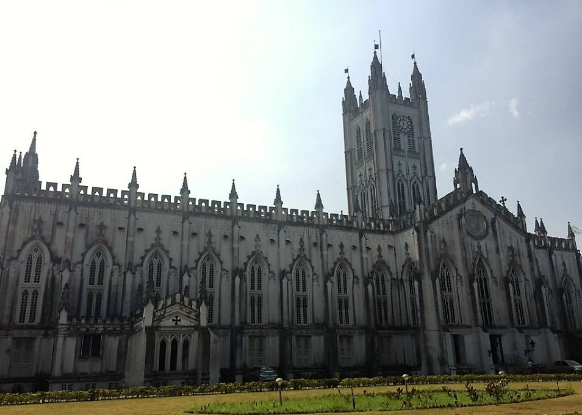
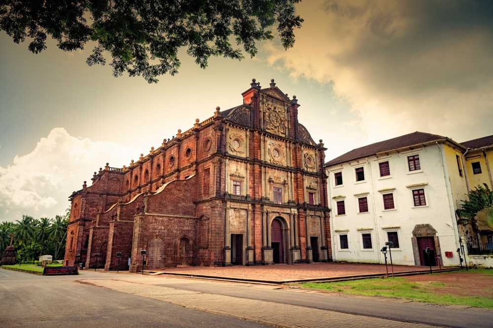
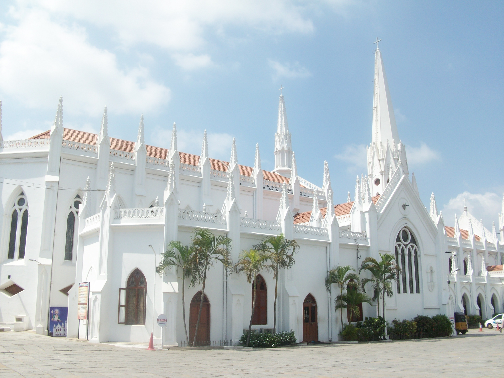

1. St. Philomena’s Church, Mysore
St. Philomena’s is a Roman Catholic Church that was built in AD 1840. Earlier known as St. Joseph Chaver, the church has twin towers
that stands majestically at 175 feet. Done in the Gothic Style of architecture, the church resembles the St. Patrick’s cathedral at
New York and a church at Cologne. It is believed that then king of Mysore, Krishnaraja Wodeyar IV laid the foundation for construction
of the church in 1933 and it has been designed a French Architect. The church has a celler where there is a statue of St. Philomena who
was a saint during the 3rd century in Greece. A piece of her bone and cloths are also said to have been preserved in this church.

2. St. Paul Cathedral, Kolkata
One of the finest looking churches in India, the St. Paul Cathedral is definitely a must see in Kolkata. Located on what is known
‘the island of attractions’, the church is done in Gothic Revival Style and has gorgeous arched windows with stained glass which
makes quite a sight to see when the sun rays touch them. The frescoes inside the church are also noteworthy, one of the best times
to visit the church is during the midnight mass on Christmas Eve when the church is lit up and proves to be the most amazing thing
you can feast your eyes on.

3. Basilica of Bom Jesus, Goa
Basilica of Bom Jesus is amongst the most famous churches in India. The church is around 300 years old and holds the remains of St. Francis
Xavier. It is one of the finest examples of Portuguese influence as the edifice is done in signature Baroque style. The flooring has been
done in marble, inlaid with precious stones, the altar is elaborate with gilded gold work, the murals and the artistic rendition are also
worth the appreciation. The church has been declared as the world heritage site and also boasts of a museum. A large number of believers
gather at the church when the preserved body of Saint Francis Xavier is put on display.

4. Santhome Church, Chennai
Santhome Church is a historically and architecturally a very important church in India. Located in the city of Chennai in Tamil Nadu, the
church sports a classic Neo-Gothic style of architecture. It is also the plave where the remains of St. Thomas are said to have been kept.
The church boasts arched windows, white washed spires, wooden roofs and domes that are worth being captured in the lens. There is also a
museum in the premises of the church that has put remnants from the older church built here.